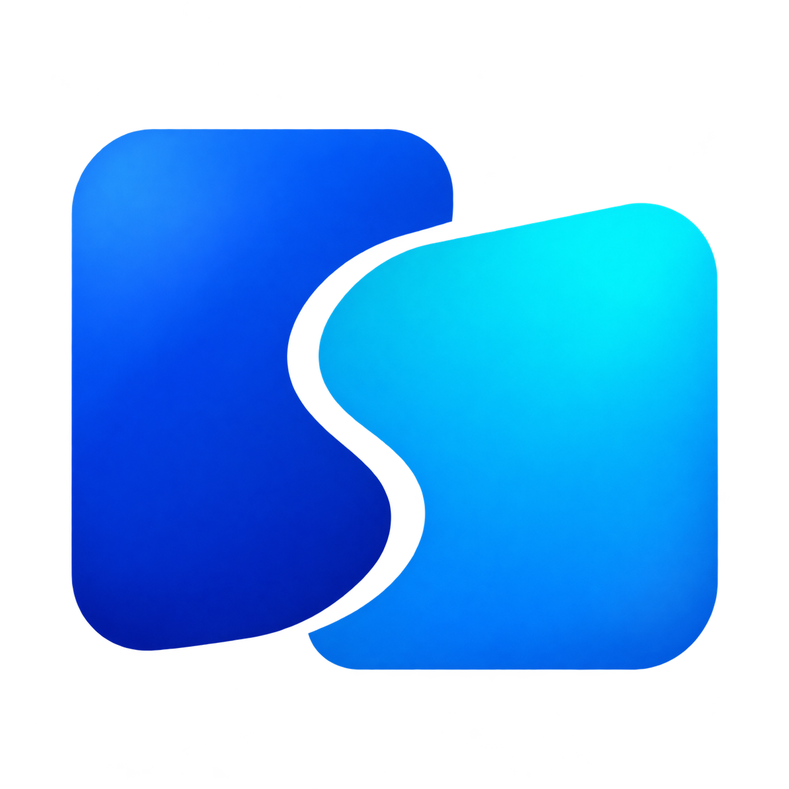

Windows
Server + ClientWindows 11 · x64
Installer or portable ZIP. Hosting requires the bundled virtual-display driver.

ExtraPaneA little more desktop.
Put the device beside you to work. ExtraPane extends your desktop to another computer, tablet or Android phone over Wi-Fi or Ethernet.
Windows · Linux · macOS · Android client
A virtual monitor adds space to your desktop. Arrange it in your operating system’s display settings.
Enter the server’s IPv4 address. Wi-Fi, Ethernet and direct cables with static addresses work without discovery or DHCP.
Send mouse and keyboard input back to the host. Touch and pen support depend on both devices and the application.
Choose your devices
The server provides the desktop; the client becomes its extra screen. Use the same ExtraPane release on both ends.
Windows 11 · x64
Installer or portable ZIP. Hosting requires the bundled virtual-display driver.
Apple Silicon + Intel · Universal DMG / ZIP
Client: macOS 12+. Host: macOS 13+, with screen-recording and input permissions.
x86_64 · AppImage
Hosting requires a Wayland desktop with virtual-output portal support. Tested on Arch KDE.
Android 11+ · APK
Receive a desktop on your phone or tablet. Touch, stylus and physical keyboard input are supported where granted by the host.
Preview support has limits. Read your platform guide before installing. Windows packages are unsigned and the driver uses a development certificate; macOS packages are ad-hoc signed, not notarized. iOS is not currently supported.
From one screen to two
Download matching packages from GitHub Releases. Choose Server + Client in the Windows installer if that PC will host.
Choose a connected interface on the host, then start listening. Enter that host’s IPv4 address on your other device.
A monitor appears when the client connects. Place it beside your main screen in display settings, then move your windows across.
No. Devices can connect over a reachable local IPv4 network, including Ethernet with manually configured static addresses. Downloading the packages is separate from running a session.
Access-code builds let you enter a reachable server IPv4 address, port and one-use code. Router forwarding and external firewall rules are up to you. Always require a code for a public listener. No-code LAN mode does not verify peer identity; older releases must stay on trusted networks. Check the release notes and access-code guide before connecting.
Read the access-code guide ↗Input depends on what the client captures and the host can inject. The platform guides describe pressure, tilt, touch and keyboard limits. System audio and microphone forwarding are not implemented.
No. ExtraPane uses its own direct-IP connection, not Miracast or Windows Cast. Install ExtraPane on both devices.
The current stream targets up to 60 FPS. Delivered frame rate and responsiveness depend on your hardware, resolution and network. Optional statistics show reception measurements, not end-to-end latency.
Get the app and the setup guide for your devices.